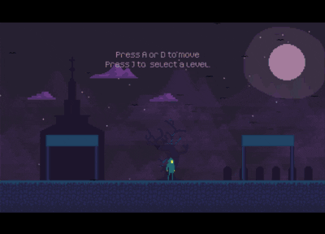

Waking Graves
Released on January 23, 2021
Waking Graves is an action platformer inspired by Megaman X and the NES Castlevanias. This was developed between October 2021 and January 2022, with weekly contributions of 2-4 hours.
My Contributions:
- Project Lead.
- Art Direction: This was the first game where I did most of the pixel art, including animations.
- Core Game Programming: Movement, combat, Health UI implementation, scene management, and audio programming
- Tileset for the graveyard scene and church grounds
- Background art for the graveyard, church, and selection screen
- Interactive gate selection screen
- Main Character, Zombie, and Master Warlock sprites and animations
My learnings and things to improve:
- This project was my first as a lead in HomeTeamGameDev and also my first doing pixel art (which I still love to this day). This was also the first project where I wholly planned the project before development (we use a kanban-weekly approach in HTGD), and from a production point of view, it gave me a lot of insights on my planning shortcomings, such as focusing too much on the bottlenecks I had in gamejams (art) and not focusing enough on gameplay.
- I also learned a lot from my mentor (Chris deLeon) for project management and learned to cut content to complete the project on schedule.
- Gameplay improvements such as better platforming and major tweaks to movement
- More challenging Enemies